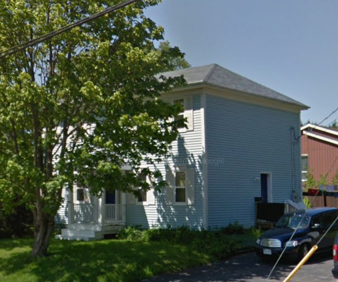
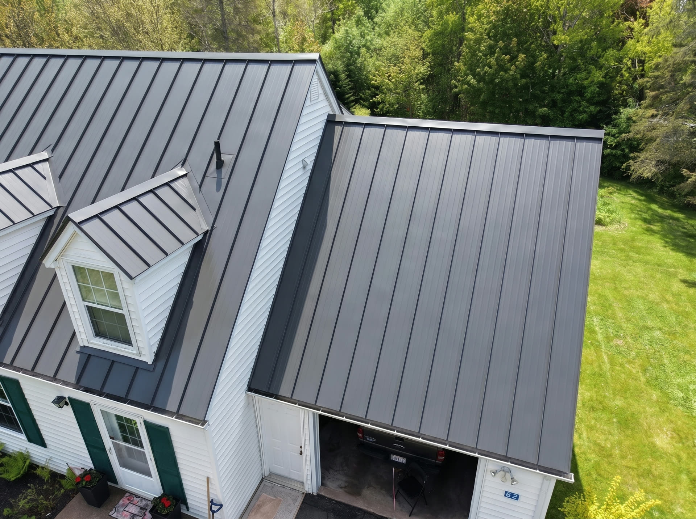
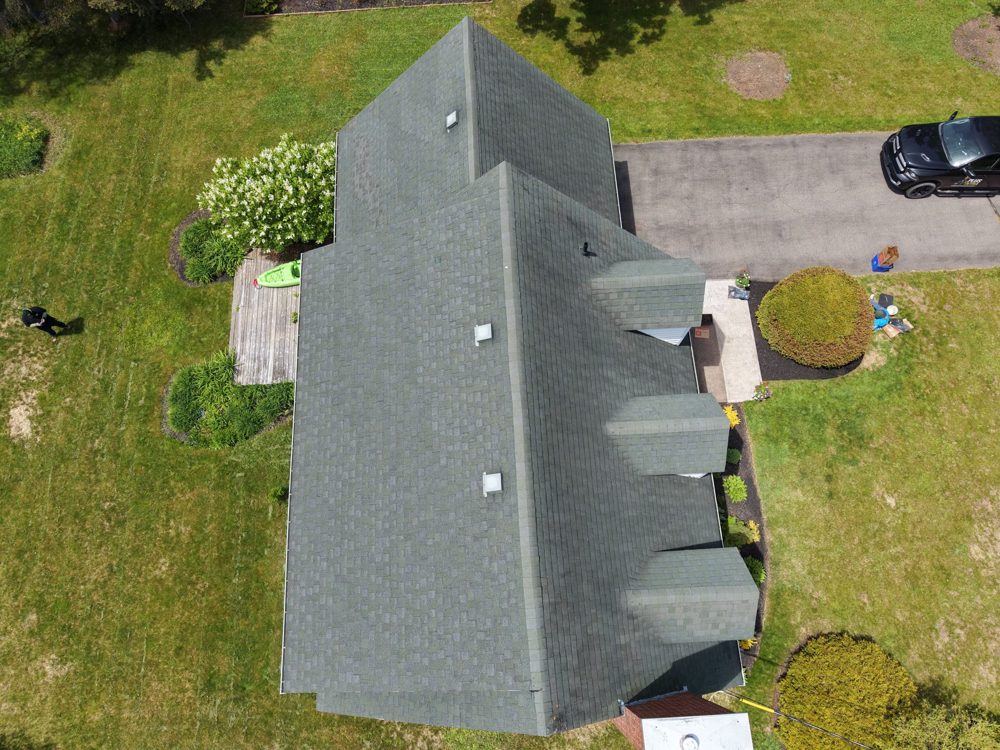
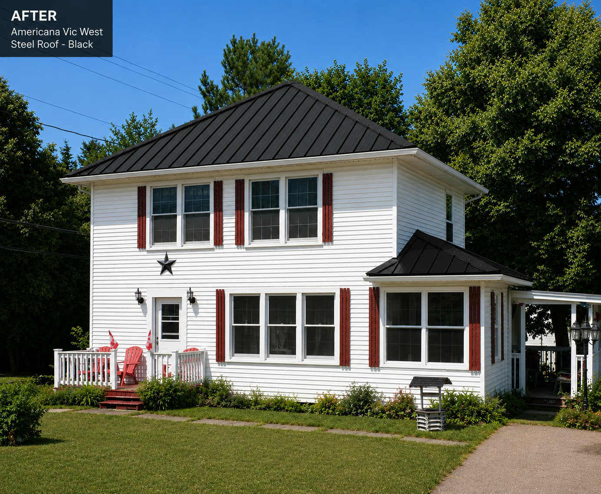
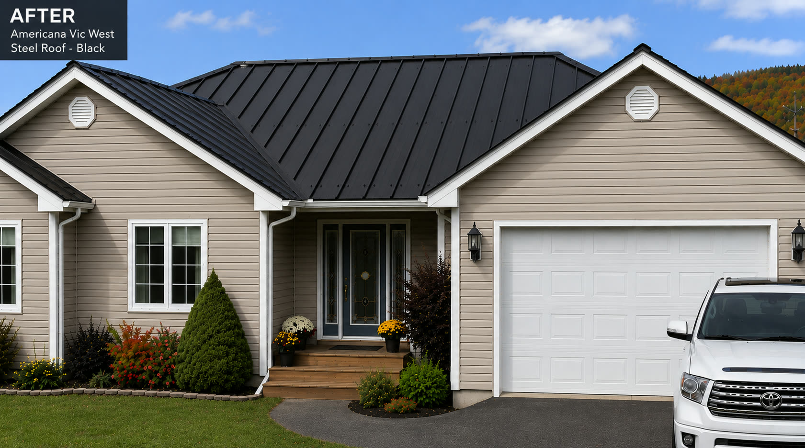

She built the calendar automation system end to end and put two Rejuvenation proposals out the door.





Cat is building the engine that makes the calendars run themselves. The only thing between built and live is your publish go.